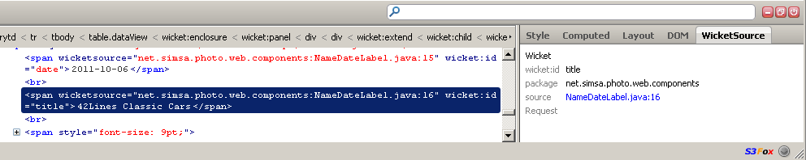
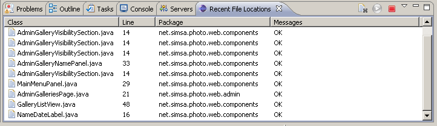

This set of tools provides full-circle visibility into the HTML and Java components used by a Wicket application, so you can jump directly to a component to make changes. It is meant primarily as a web developer tool.
There are three parts.
wicketsource-1.0.jar plugs in to your Wicket
application to record the class and line number where each component is created.
It produces an html attribute on each dom node, like so:
wicketsource="net.simsa.photo.web.MainMenuPanel:35"
Usage, in your WicketApplication class (choose any debug condition you wish, but the instantiation listener most closely matches the behavior specified here).
if (getDebugSettings().isLinePreciseReportingOnNewComponentEnabled()) {
addComponentInstantiationListener(new AttributeModifyingInstantiationListener());
}
Usage, in the base Page class for the application:
private AttributeModifyingComponentVisitor locationTagger = new AttributeModifyingComponentVisitor();
// member variable
@Override
protected void onBeforeRender()
{
super.onBeforeRender(); // goes first so repeating views/grids/datatables have rendered children.
if (getApplication().getDebugSettings().isOutputMarkupContainerClassName()) {
locationTagger.addClassNameVisitor(this);
}
}
This is a Firebug extension, so yes, you need Firebug as well.
The WicketSource (click to install) firebug extension lets you inspect an element and request that the file be opened in Eclipse.
Inspect an element with Firebug, and then flip over to the WicketSource tab to see where in the Java code its Wicket component was created. Click the hyperlink to send a request to Eclipse to open the file (you'll need the Eclipse plug-in below for that to work).

The SourceOpener plugin for Eclipse is the final step. To install, copy the jar into your \eclipse\dropins folder and restart Eclipse. Then go to the menu "Window", "Show View", "Source Opener", "Recent File Locations", and put the resulting tab wherever you like.
The listener starts up by default, so it should be usable immediately. The first open-file click from Firefox will be briefly slow while the search engine initializes; the rest should be quite fast.
Double-click any item in the "Recent File Locations" tab, to reopen to that same line.

WicketSource for Firebug and SourceOpener for Eclipse communicate across a port. You can set a different port through the preferences (make sure they both match!) and optionally require a password as well.
You can also stop and start the listener in Eclipse (red square to stop, green play button to start). It will pick up preference changes automatically, so you may never need to manually stop or start it.
Enjoy!